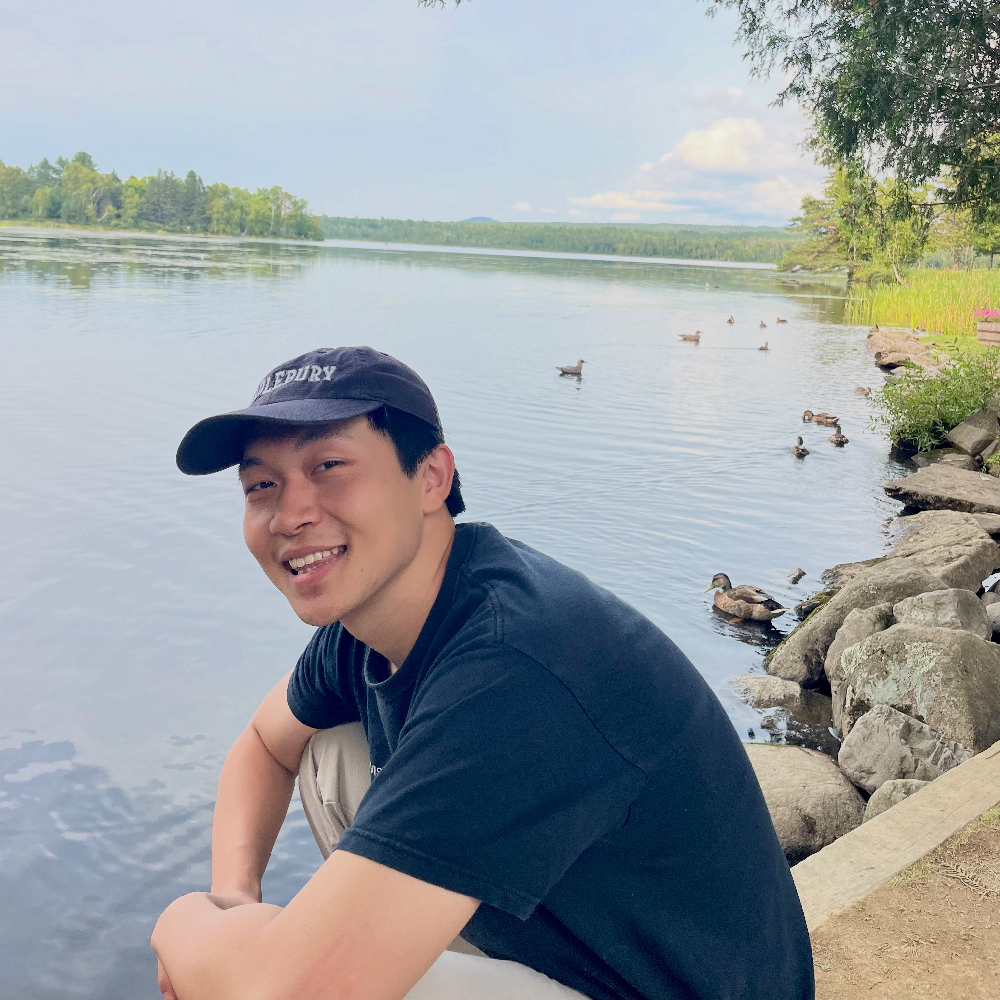

Hanming Yang
hy2781 [at] columbia [dot] edu ·
Google Scholar ·
GitHub ·
CV
I am a first-year PhD student in the
Decision, Risk, and Operations
division at Columbia University, where I am fortunate to work with
Prof. Hongseok Namkoong and
Prof. Jing Dong.
Before my PhD, I spent two years at Google from 2024 to 2026 working on
embeddings, post-training, and agents. I did my undergraduate studies in computer science at Middlebury College and Columbia.
I am interested in principled and useful ideas that draw from machine learning,
operations research, and statistics. I also go by Albert.
Publications & Preprints
-
Rare Event Simulation via Iterative Unalignment
H. Yang, D. Mittal, J. Dong, H. Namkoong.
Preprint, 2026.
[arXiv]
Prior Work
* Equal contribution.
-
Gemini Embedding 2: A Native Multimodal Embedding Model from Gemini
M. Shanbhogue, Z. Li, S. Zhang, G. H. Ábrego, S. C. Huang, A. Jain, D. Salz, …, H. Yang, … et al.
arXiv:2605.27295, 2026.
[arXiv]
-
Pre-training and In-context Learning is Bayesian Inference a la de Finetti
N. Ye, H. Yang, A. Siah, H. Namkoong.
ICLR 2024 Workshop on Mathematical and Empirical Understanding of Foundation Models (ME-FoMo).
[arXiv]
-
Variational Pseudo Marginal Methods for Jet Reconstruction in Particle Physics
H. Yang*, A. K. Moretti*, S. Macaluso, P. Chlenski, C. A. Naesseth, I. Pe'er.
Transactions on Machine Learning Research (TMLR), 2024.
[arXiv]
Journal-to-Conference (J2C) Certification (top ~10%).
-
Towards End-to-End Structure Determination from X-ray Diffraction Data Using Deep Learning
G. Guo, J. Goldfeder, L. Lan, A. Ray, A. H. Yang, B. Chen, S. J. L. Billinge, et al.
npj Computational Materials 10 (1), 209, 2024.
[DOI]
Miscellaneous